Kasir cepat di HP, tablet, atau PC. Backoffice untuk stok, keuangan, dan laporan. Data tersinkron ke Google Sheets milik kamu sendiri.
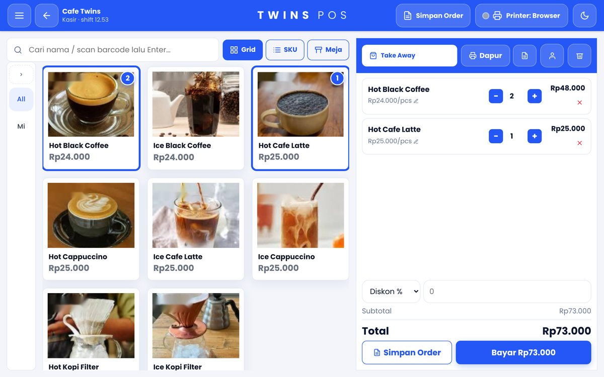
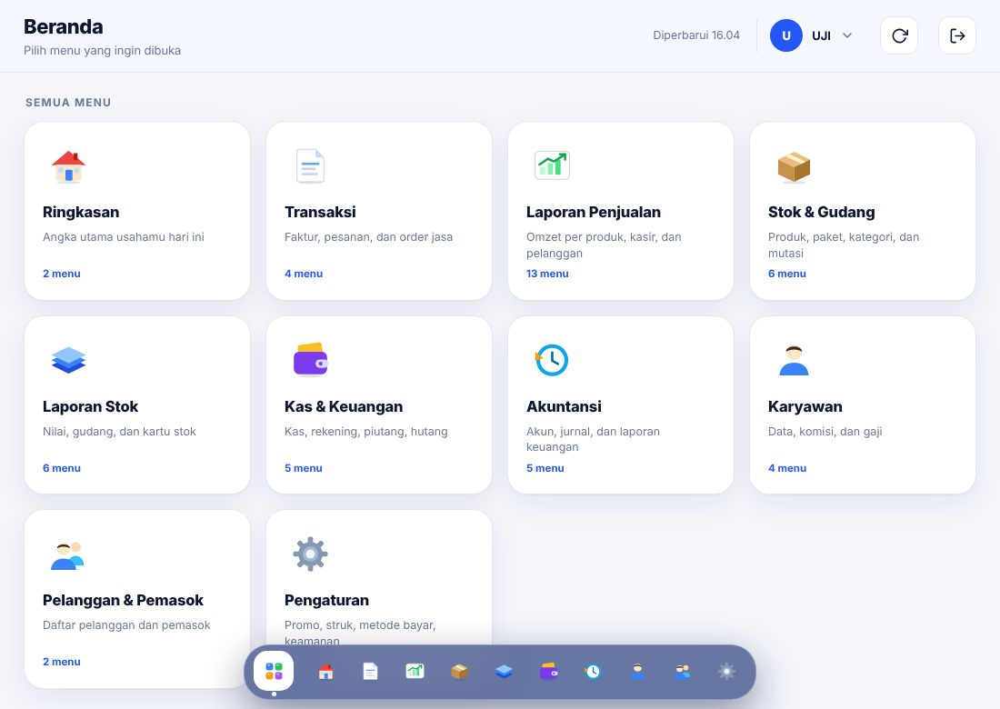
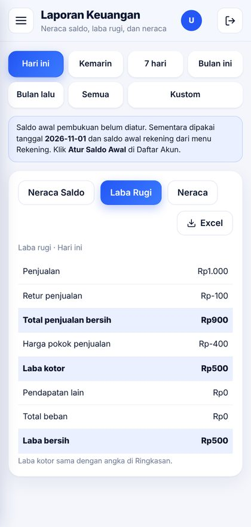
Pilih menu dari grid berfoto, atur jumlah, lalu bayar. Cocok untuk kasir yang melayani antrean ramai.
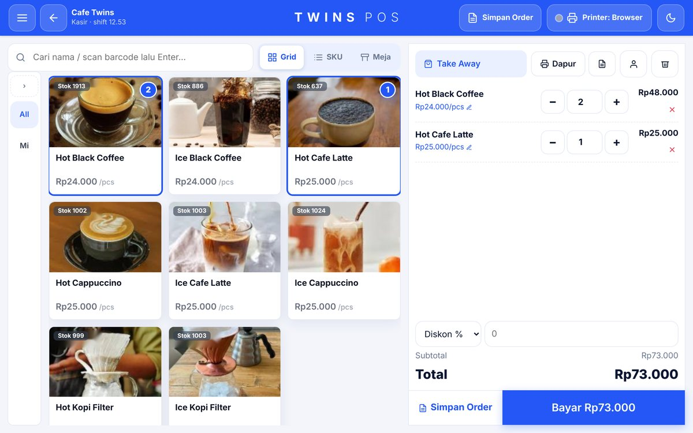
Karyawan memilih namanya, memasukkan PIN, lalu mengambil selfie. Foto absen tersimpan rapi dan bisa dilihat pemilik.
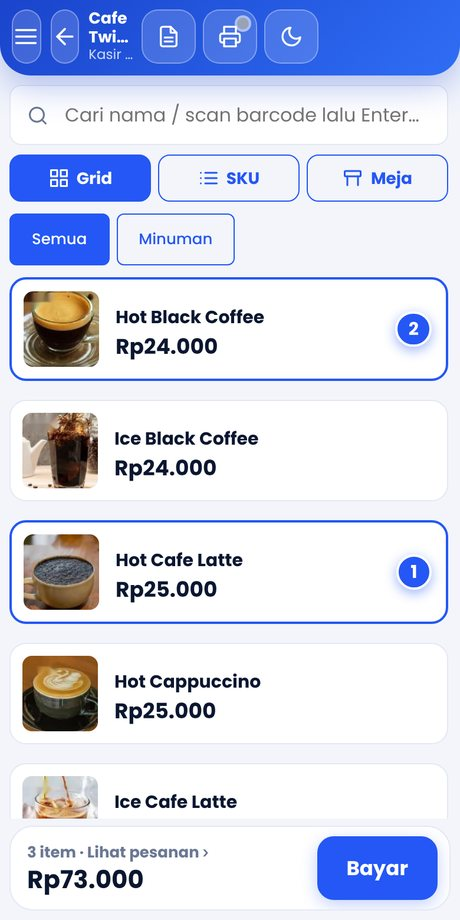
Buka dari browser di laptop atau HP. Menu dikelompokkan supaya cepat ditemukan.
Transaksi, laporan penjualan, stok, kas dan keuangan, akuntansi, karyawan, sampai pengaturan. Semua ada di satu beranda.
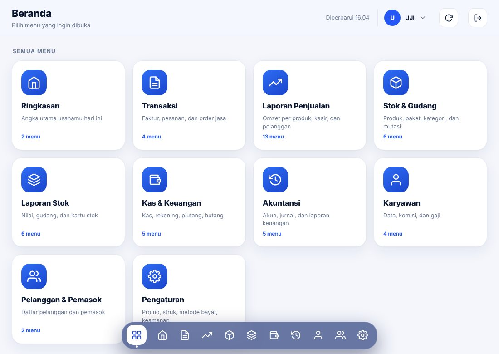
Tiap grup membuka daftar laporan dengan kolom pencarian. Tidak perlu menelusuri menu yang panjang.
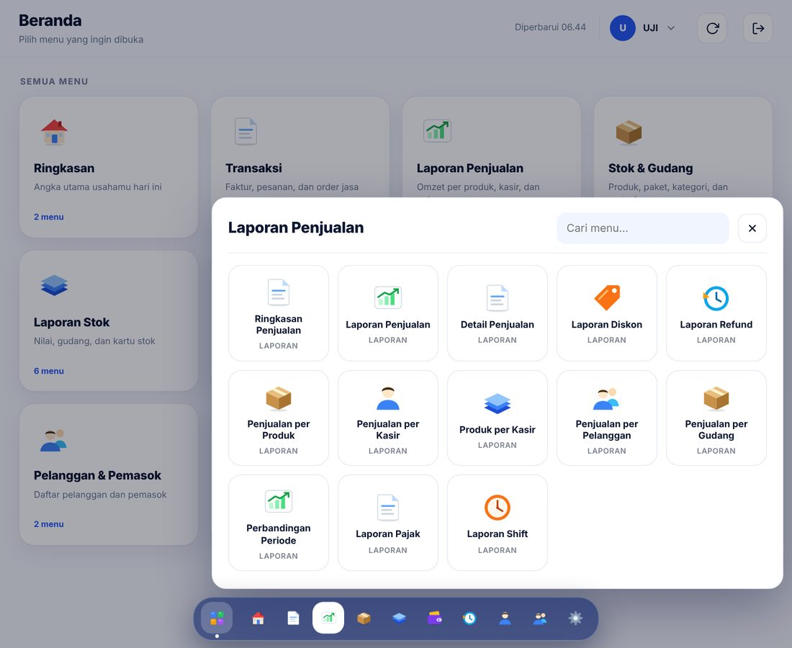
Pemilik bisa melihat laba rugi, penjualan, dan kas dari HP. Tampilan menyesuaikan layar kecil.
Tampilan menyesuaikan ukuran layar. HP, tablet, dan PC memakai data yang sama.
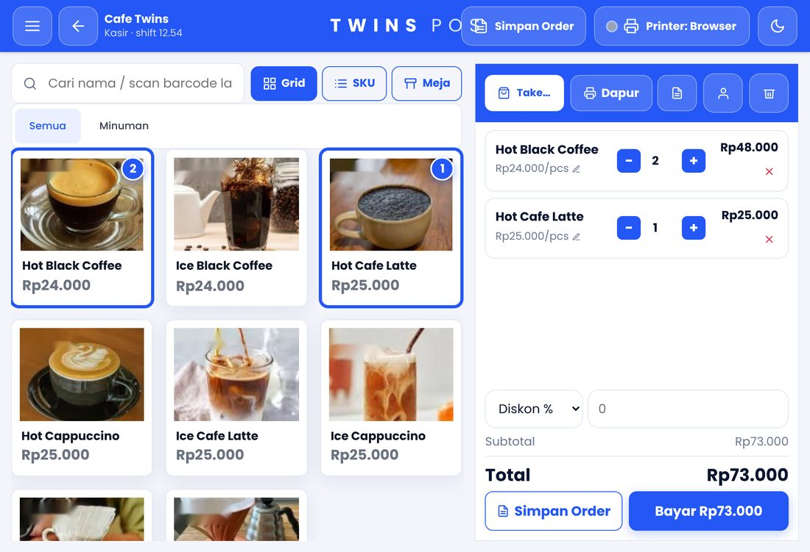
Pilih gaya Standar atau Resto, ganti warna aksen, dan pakai mode terang atau gelap.
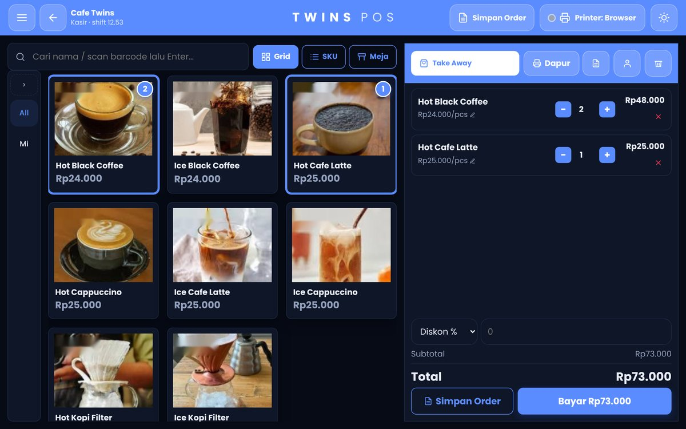
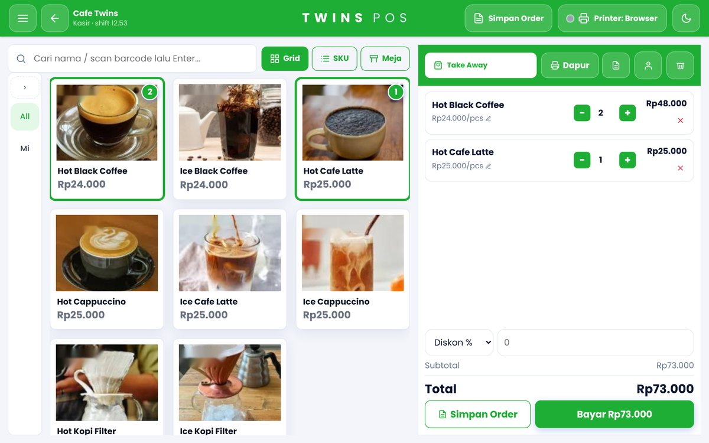
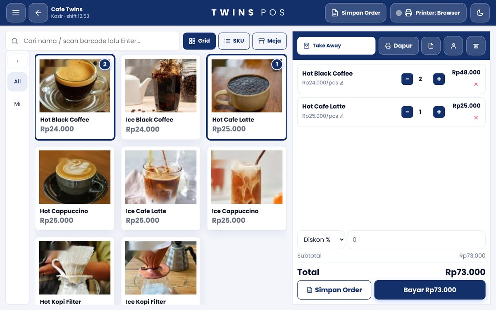
Fitur yang dipakai kasir dan pemilik setiap hari.
Gratis diunduh. Pasang di perangkat, lalu masuk dengan akun tokomu.
Untuk laptop atau PC kasir. Cetak langsung ke printer tanpa dialog browser.
Windows 10/11 Download untuk WindowsKhusus pemilik: pantau laporan penjualan, kas, dan stok dari HP. Hanya baca.
Android · versi 1.1 Download APK Owner